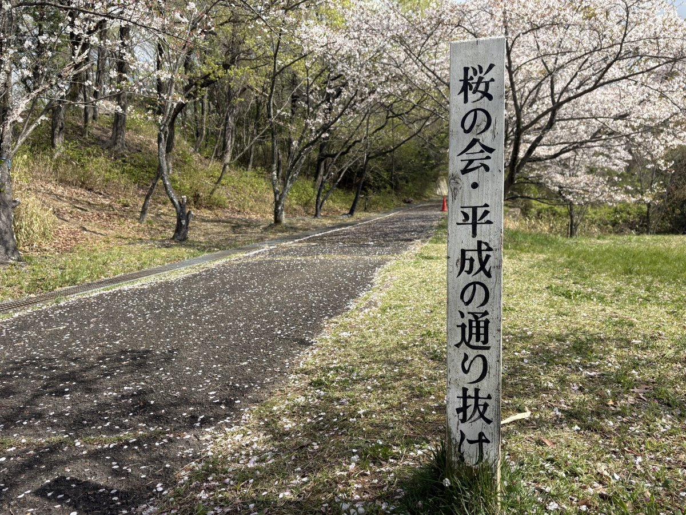

近つ飛鳥風土記の丘
大阪府南河内郡河南町大字東山299
備考・犬連れでのポイント
102基の古墳が保存された29haの史跡公園。駐車場は博物館側（約80台）と公園側（約30台）の2箇所あり、いずれも無料。
公園側は台数が少なく桜シーズン等は満車になりやすいため、博物館側がおすすめ。
博物館側駐車場の出口付近にグレーチング（排水溝の蓋）があり、小型犬は足を挟む恐れがあるため抱っこして通ること。
博物館の大階段は建物内（エレベーター）に繋がっているため、犬連れは階段横のスロープから丘へ向かう。
丘へのルートは2つあり、緩やかな道と少し急だけど近い道がある。
犬連れには緩やかな道がおすすめ。展望台へはかなり急な登りが続くので体力に余裕を持って。
展望台からは天気が良ければ淡路島まで見える。園内にマムシ注意の看板あり。
春は梅・桜、秋は紅葉が楽しめる。トイレは洋式あり（温水洗浄なし）、身障者用トイレあり。
博物館内はペット不可。9:30〜17:00、月曜休園。